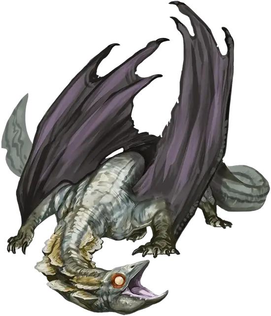

Молодой глубинный дракон
Young Deep Dragon
Большой Дракон, Нейтральный Злой

Класс Защиты 16 Инициатива +4 (14)
Хиты 93 (11к10 + 33)
Скорость 40 футов, Плавания 40 футов, Полёта 80 футов, Копания 20 футов
| мод | спас | ||
|---|---|---|---|
| СИЛ | 18 | +4 | +4 |
| ЛОВ | 13 | +1 | +4 |
| ТЕЛ | 16 | +3 | +3 |
| мод | спас | ||
|---|---|---|---|
| ИНТ | 12 | +1 | +1 |
| МДР | 14 | +2 | +5 |
| ХАР | 16 | +3 | +3 |
Сопротивление урону Психический, Яд
Иммунитеты Испуганный, Отравленный, Очарованный
Чувства Тёмное зрение 150 футов, пассивное Восприятие 18
Языки Общий, Драконий, Подземный
Опасность 5 (1 800 опыта; БВ +3)
Действия
Мультиатака. Дракон совершает три атаки Раздиранием.
Раздирание. Бросок рукопашной атаки: +7, досягаемость 10 фт. Попадание: 11 (2к6 + 4) Рубящего урона плюс 3 (1к6) урона Ядом.
Кошмарное дыхание (Перезарядка 5–6). Спасбросок Мудрости: Сл 14, каждое существо в 30-футовом Конусе. Провал: 22 (4к10) Психического урона, и цель Испугана до конца следующего хода дракона. Успех: Только половина урона.
Бонус мастерства +3
Среда обитания Подземье
Сокровища Магические
Глубинные драконы
Драконы пещер и тайн
Глубинные драконы ползают по влажным, лишённым света уголкам Подземья. Это скрытные охотники питают особое пристрастие к забытым знаниям и грибам, что буйно разрастаются в глубинах. С возрастом их гладкие змеевидные тела покрываются грибковой гнилью, особенно вокруг морды, и тогда их дыхание наполняется наводящими ужас спорами.
Эти драконы алчут сокровищ и знаний. Одни ищут знания в странствиях и личном опыте, проползая по пещерам и подземным морям десятки миль, чтобы нанести на карту потаённые ходы. Другие любят взращивать обширные плантации плесени и грибов — в том числе исполинских, способных скрыть извилистые тела самих драконов. Многие из них собирают забытые фолианты и творения искусства, отбирая, выманивая или попросту воруя их у мудрецов-дроу и -дуэргаров.
Глубинные драконы превосходно плавают. Они часто вступают в столкновения с водными общинами Подземья — например, с куо-тоа. Многие из них требуют с этих общин дань пищей или сокровищами.
У исследователей Подземья бывает немало причин отважиться на визит в логово глубинного дракона помимо охоты за богатствами: там могут храниться единственные уцелевшие копии забытых знаний, грибные компоненты для лекарств или хворей, а также карты, ведущие к затерянным уголкам Подземья.
Молодые глубинные драконы обустраивают логова в знакомых им охотничьих угодьях и защищают их запутанными ходами и ловушками вроде обвальных ям. Они господствуют на этой территории, поглощая горы рыбы и бледных крабов, а заодно взращивая обширные грибные плантации. При случае они запугивают соседние общины или заключают осторожные соглашения с могущественными подземными поселениями, такими как города дроу.